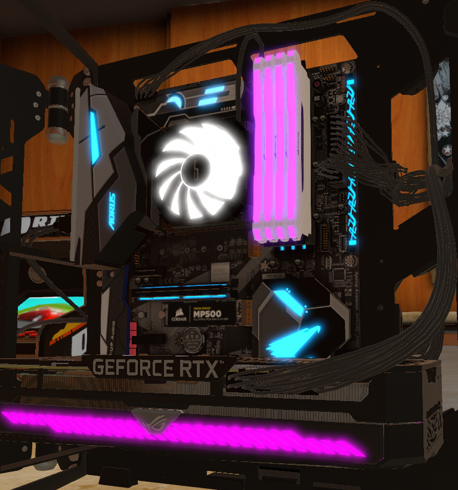

Le boîtier (ou châssis) de l'ordinateur est le squelette métallique abritant ses différents composants internes.
Les boîtiers ont par ailleurs d'autres utilités telles que l'isolement phonique ou la protection contre les rayonnements électromagnétiques.
Ainsi des normes existent afin de garantir un niveau de protection conforme à la réglementation en vigueur.
Les éléments de choix principaux d'un boîtier sont son facteur de forme, ses dimensions, le nombre d'emplacements pour des lecteurs,
son alimentation, la connectique en façade et enfin son design et ses couleurs.
Ainsi, si les boîtiers se ressemblaient tous aux débuts du PC, il existe aujourd'hui des boîtiers de toutes les formes,
parfois même transparents afin de permettre aux utilisateurs de faire du tuning à l'aide par exemple de néons.
Le facteur de forme (en anglais form factor) désigne le format de l'emplacement prévu pour la carte mère, les types de connecteurs et leur agencement.
Il conditionne ainsi le type de carte mère que le boîtier peut accueillir.
Un boîtier renferme l'ensemble de l'électronique interne de l'ordinateur.
Or, les éléments de l'ordinateur sont amenés à atteindre des températures élevées.
Il est donc impératif de choisir un boîtier possédant une bonne ventilation, c'est-à-dire un maximum de ventilateurs,
ainsi que des aérations. Il est ainsi conseillé de choisir un boîtier comportant a minima une entrée d'air à l'avant,
munie d'un filtre à air amovible, ainsi que d'une sortie d'air à l'arrière.
| Source | *Image provenant du jeu "PC Building Simulator". |